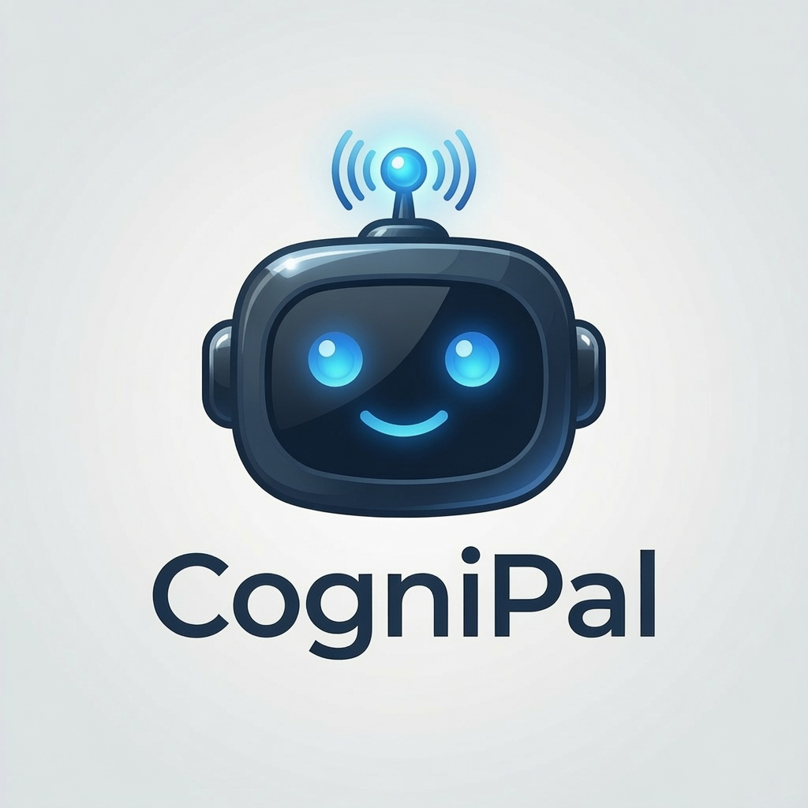

Human-centred artificial intelligence
AI without the fog machine.
Practical thinking, books and conversations about artificial intelligence, automation and the systems reshaping modern work.

Practical thinking, books and conversations about artificial intelligence, automation and the systems reshaping modern work.
